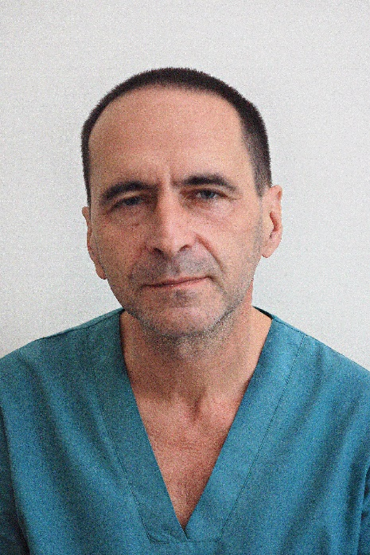
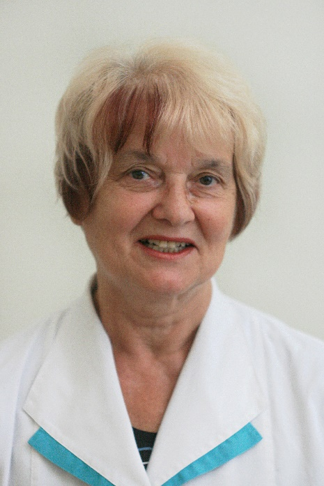
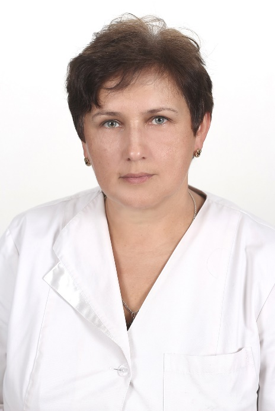
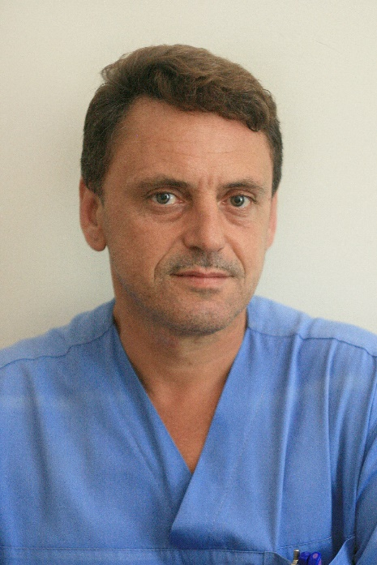
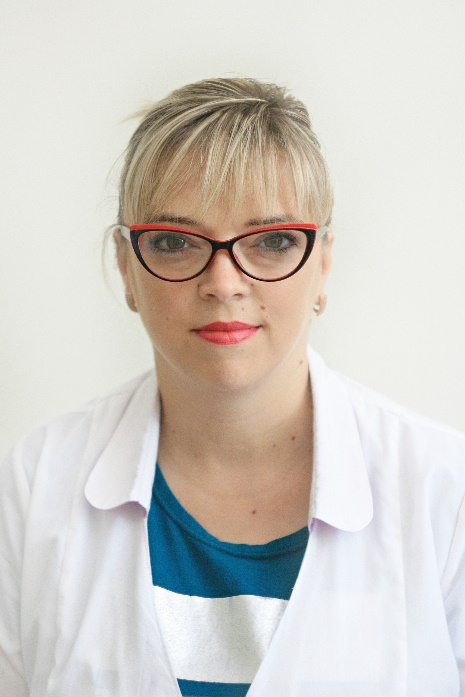
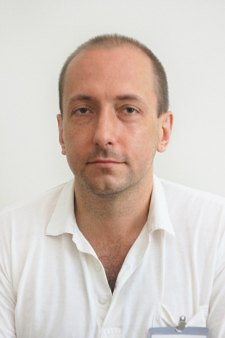
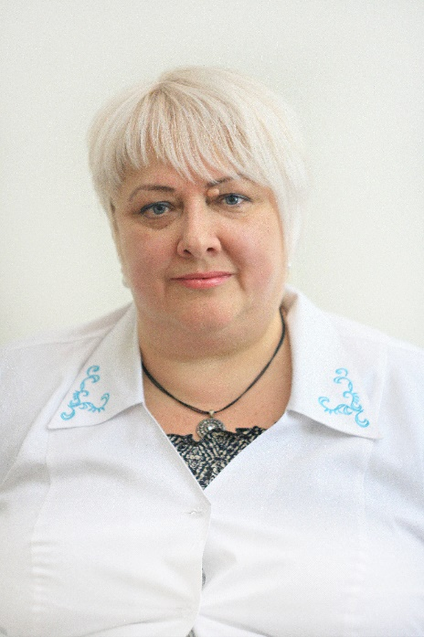
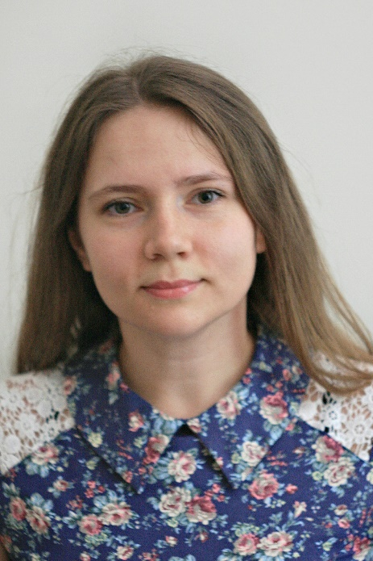
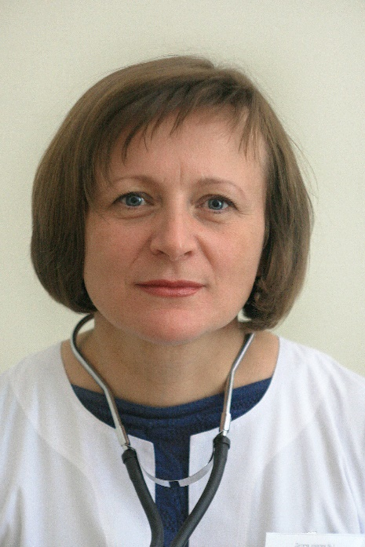

Телефон «Гарячої лінії» КНП «Міська дитяча лікарня №1» ЗМР: 96-20-21
КНП "Міська дитяча лікарня №1" Запорізької міської ради


Телефон «Гарячої лінії» КНП «Міська дитяча лікарня №1» ЗМР: 96-20-21
Поліклінічний підрозділ лікарні надає спеціалізовану консультативну медичну допомогу дитячому населенню Комунарського, Шевченківського та Олександрівського районів за спеціальностями: ендокринологія, офтальмологія, урологія, неврологія, кардіоревматологія, імунологія, інфекціоніст, алергологія, отоларингологія, хірургія, ортопедія, травматологія, гінекологія, педіатрія; також консультативна допомога логопеда та психолога.
Основними завданнями є:
Структура поліклінічного підрозділу:
Здійснення он-лайн запису дитини до лікаря-спеціаліста Ви можете зробити за наступним посиланням: https://helsi.me/ та обирайте зручний для Вас час.
Графік прийому лікарів спеціалістів поліклініки № 1 за адресою вул.Культурна, буд.123
| Лікарі фахівці : | ||
| Отоларинголог | ||
 Семененко Дмитро Володимирович лікар отоларинголог дитячий кваліфікаційна категорія - перша |
Понеділок Вівторок Середа Четвер П'ятниця |
З 08.00. до 17.00. З 08.00. до 17.00. З 08.00. до 17.00. З 08.00. до 17.00. З 08.00. до 17.00. |
| Гінеколог підлітковий | ||
 Іващенко Євгенія Григорівна лікар гінеколог кваліфікаційна категорія - перша |
Понеділок Вівторок Середа Четвер П'ятниця |
З 08.00. до 14.00. З 08.00. до 14.00. З 08.00. до 14.00. З 08.00. до 14.00. З 08.00. до 14.00. |
| Гінеколог дитячий | ||
 Сердюк Лариса Олексіївна лікар гінеколог дитячий кваліфікаційна категорія - перша |
Понеділок Вівторок Середа Четвер П'ятниця |
З 15.45. до 17.00. З 15.45. до 17.00. З 15.45. до 17.00. З 15.45. до 17.00. З 15.45. до 17.00. |
| Хірург | ||
 Веркеєнко Вадим Валентинович лікар хірург дитячий кваліфікаційна категорія - перша |
Понеділок Вівторок Середа Четвер П'ятниця |
З 08.30. до 16.30. З 08.30. до 16.30. З 11.00. до 17.00. З 08.30. до 16.30. З 08.30. до 16.30. |
| Окуліст | ||
 Сіроіжко Людмила Миколаївна лікар хірург дитячий, кваліфікаційна категорія - друга |
Понеділок Вівторок Середа Четвер П'ятниця |
З 08.00. до 14.00. З 08.00. до 14.00. З 11.00. до 17.00. З 08.00. до 14.00. З 08.00. до 14.00. |
| Логопед | ||
Онопрієнко Анна Сергіївна логопед |
Понеділок Вівторок Середа Четвер П'ятниця |
З 08.00. до 11.00. З 08.00. до 12.00. З 13.00 до 17.00. З 08.00. до 12.00. З 09.00. до 12.00. |
| Кардіо –ревматолог | ||
Солтис Ольга Михайлівна лікар кардіоревматолог дитячий |
Понеділок Вівторок Середа Четвер П'ятниця |
З 08.00 до 14.00. З 08.00. до 14.00. З 11.00 до 1700. З 08.00. до 14.00. З 08.00 до 14.00. |
| Уролог | ||
 Щевельов Тимур Сергійович лікар уролог дитячий кандидат медичних наук, магістр медицини кваліфікаційна категорія - вища |
Понеділок Вівторок Середа Четвер П'ятниця |
З 08.00. до 14.00. З 8.00. до 14.00. З 11.00. до 17.00. З 8.00. до 14.00. З 8.00. до 14.00. |
| Ендокринолог | ||
 Бойченко Вікторія Анатоліївна лікар ендокринолог дитячий кваліфікаційна категорія - вища |
Понеділок Вівторок Середа Четвер П'ятниця |
З 08.00. до 14.00. З 08.00. до 14.00. З 11.00. до 17.00. З 08.00. до 14.00. З 08.00. до 14.00. |
| Невролог | ||
 Вівташ Олеся Іванівна лікар невролог дитячий кваліфікаційна категорія - друга |
Понеділок Вівторок Середа Четвер П'ятниця |
ЗЗ 08.00. до 14.00. З 08.00. до 14.00. З 11.00. до 17.00. З 08.00. до 14.00. З 08.00. до 14.00. |
| КІЗ | ||
 Синиця Юлія Володимирівна лікар інфекціоніст дитячий кваліфікаційна категорія - перша |
Понеділок Вівторок Середа Четвер П'ятниця |
З 8.00. до 15.00. З 8.00. до 15.00. З 8.00. до 15.00. З 8.00. до 15.00. З 8.00. до 15.00. |